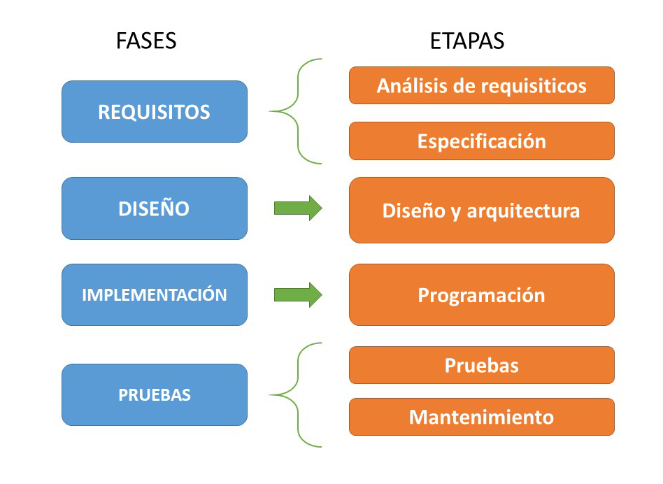

Ingenieria de software
Es una disciplina de la ingenieria que comprende todos los aspectos de la produccion de software.
- Procesos técnicos de desarrollo del software.
- Gestión de proyectos de software.
- Desarrollo de herramientas, métodos y teorías de apoyo a la producción del software.
1. Etapas de la ingenieria de software
| Analisis de requisitos | Es la etapa mas importante del desarrollo de software, en la que se captura los requisitos o necesidades que el software debe realizar. |
|---|---|
| Especificación | Etapa en la que se estudia detalladamente los requisitos y se describe la funcionalidad que debe tener el software. |
| Diseño y arquitectura | Etapa en la que se determina como funcionará el sistema. Se ve los aspectos tecnicos de infraestrctura, red, base de datos, lenguajes de programación, etc. |
| Programación | Etapa en la que se construye el software. |
| Pruebas | Comprobar que el software realice las tareas correctamente y que garantice el cumplimineto de los requerimientos. |
| Mantenimiento | Etapa en la que se corrige errores y se mejora la funcionalidad con la implementación de nuevos requisitos. |
2. Proceso de desarrollo de software
Considera 4 fases importantes
